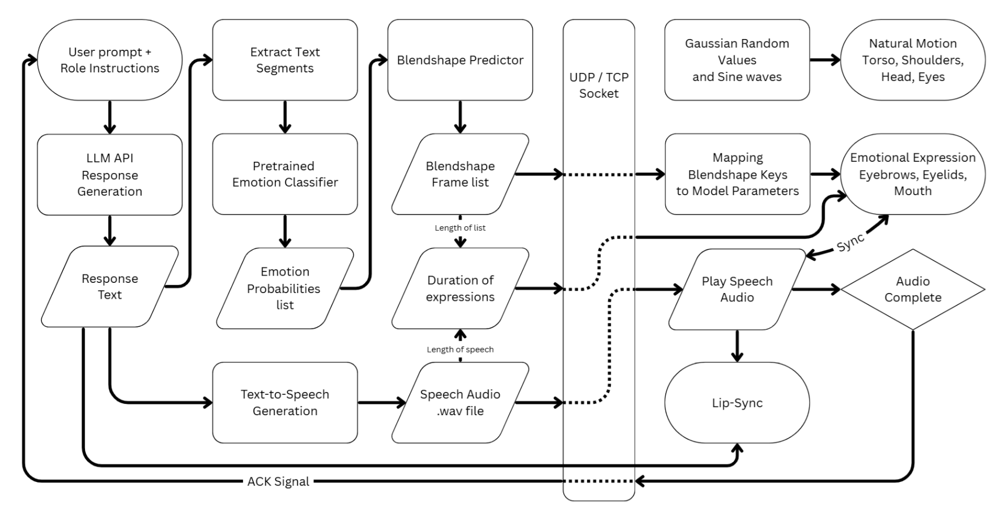
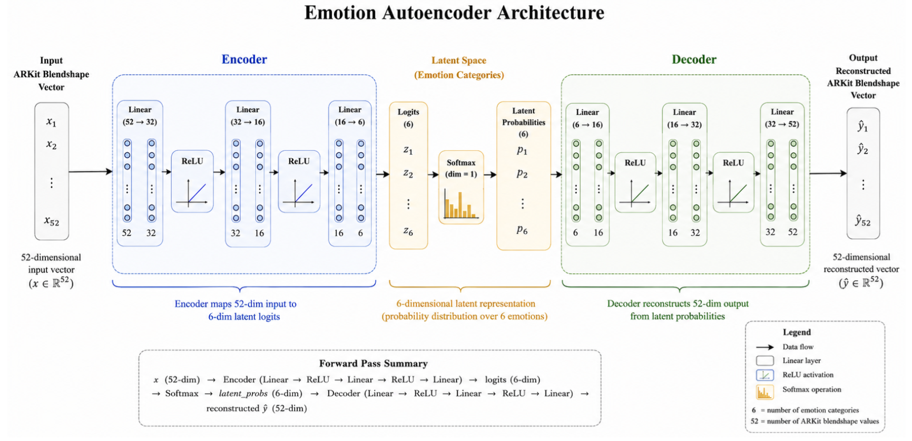

This paper presents a response-driven generative Virtual Persona framework designed to enhance Human–Computer Interaction (HCI) by transforming conversational text into emotionally expressive avatar responses. Unlike conventional chatbot systems that rely solely on text or voice, the proposed system adds a synchronized visual and emotional layer by integrating Natural Language Processing (NLP), deep learning–based emotion recognition, autoencoder-based blendshape synthesis, speech synthesis, and real-time avatar rendering into a unified modular pipeline. Conversational responses generated by a Large Language Model (LLM) are segmented into overlapping text windows using a sliding window technique, enabling localized emotion detection across continuous speech. Detected emotion probability distributions are transformed into 52-dimensional facial blendshape vectors via a custom neural autoencoder, which are then applied in real time to animate a 3D avatar. The framework further incorporates viseme-based lip synchronization, procedural secondary motion including eye blinking, breathing, and head movement, and a FastAPI backend for low-latency inference. Two complementary rendering implementations are explored: a web-based pipeline using Three.js and WebGL, and an alternative Unity-based VRM/glb environment supporting advanced shaders, physics-based animation, and XR deployment. The proposed system provides a scalable, modular foundation for emotionally aware virtual agents applicable to virtual assistants, education, interactive storytelling, gaming, and immersive human–computer interaction.
High-level pipeline and emotion-autoencoder architecture.

